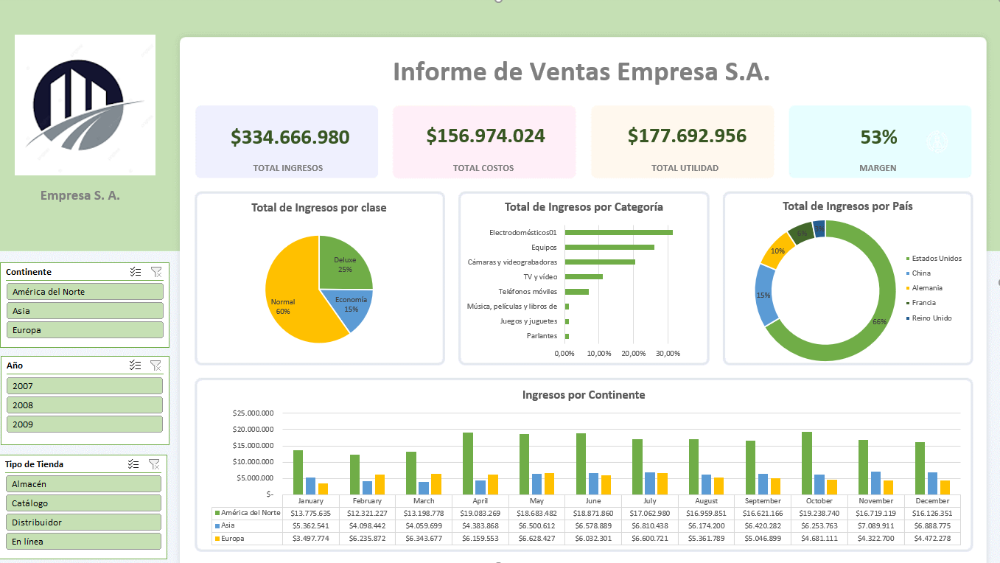
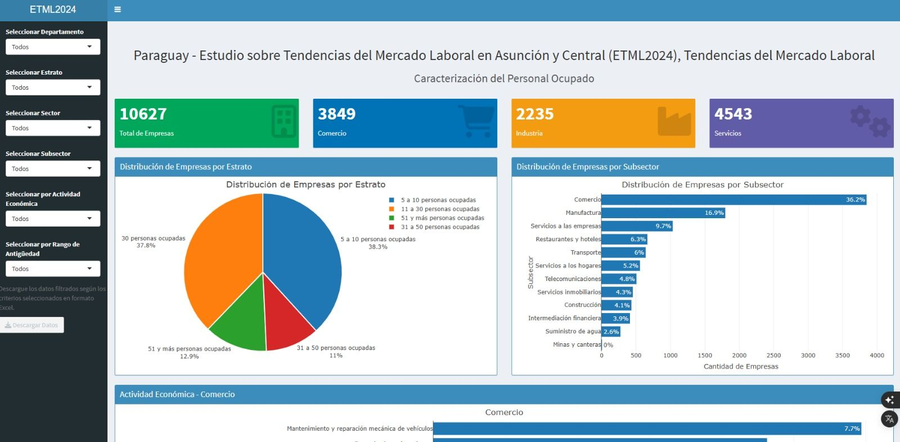

📊 Portafolio de Proyectos y Dashboards
Algunos ejemplos de proyectos desarrollados en Power BI, Excel, SQL y R Shiny aplicados al análisis de datos, visualización interactiva y toma de decisiones empresariales.


Análisis en Excel – Contoso Sales (100 000 registros)
Proyecto desarrollado con Power Query y Power Pivot sobre el dataset Contoso BI, aplicando modelado relacional y medidas DAX.
📄 Ver PDF con medidas DAX
🔗 Ver archivo Excel
Análisis con MySQL – Northwind
Consultas SQL por nivel (básico, intermedio, avanzado) sobre la base Northwind: uniones, triggers y auditorías automáticas.
Incluye visualización ERD y documentación completa.

Estudio sobre el Mercado Laboral en Paraguay
Aplicación desarrollada con R, Shiny y Plotly para visualizar el mercado laboral paraguayo.
Proyecto financiado por SINAFOCAL y validado con datos del
Instituto Nacional de Estadística (INE).
🔗 Ver informe interactivo
💬 Ver en LinkedIn